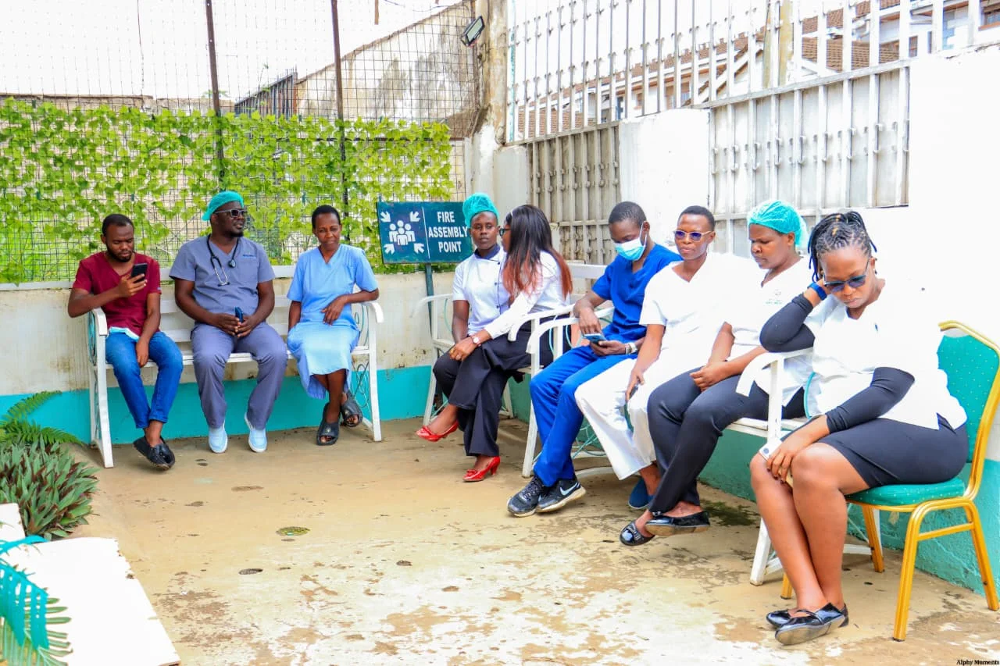

Medical services
Outpatient, inpatient, laboratory, pharmacy and specialised care.
Explore services
Kisumu Central · Kenya
Professional, patient-centred healthcare for individuals and families in Kisumu and beyond.
Welcome to Gifted Minds
Gifted Minds Medical Centre is a private Level 3B health facility in Kisumu Central Sub-County.
Established in 2019, the centre has grown from an outpatient facility to provide both inpatient and outpatient care. Our work is guided by a commitment to accessible, quality and compassionate healthcare.
Discover our storyCare and services
Explore the centre’s clinical services, patient support and care environment. Contact the team with questions about your visit.
Outpatient, inpatient, laboratory, pharmacy and specialised care.
Explore servicesMeet the named professionals and care teams shown in our supplied staff photographs.
Meet the teamSee the centre’s care spaces and documented patient capacity.
Explore facilitiesCall, email or message the centre and find the Kisumu location.
Plan your visit
Community health
The centre’s community health promotion includes medical camps, health screening, maternal and child health awareness, school health education and immunisation activities.
Learn about outreach